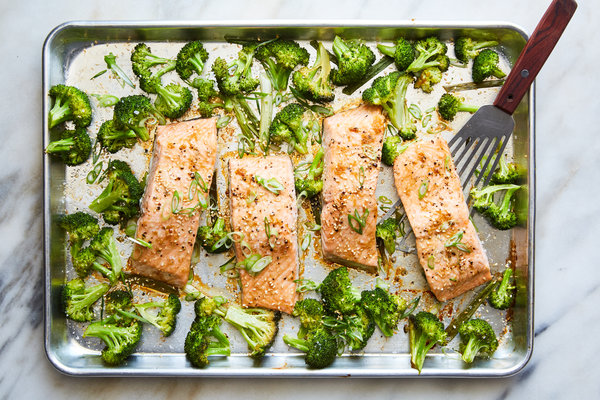

Salmon Recipe

Delicious Salmon and Broccoli Meal
Ingredients:
- 2 salmon filets
- Lemon
- Salt to taste
- Pepper to taste
- Olive oil
- Broccoli
Steps:
- First, you will want to preheat your oven to 400 degrees.
- While the oven is heating up, on a pan, coat the salmon with oil and lemon juice, then sprinkle on salt and pepper to taste as desired.
- After, on the same pan, coat the broccoli in oil and add salt and pepper to taste.
- Once the oven is ready, throw the pan in and leave it in for 15 minutes. If you want to leave the salmon in for a little longer feel free, but once you take it out it should be ready to serve. Enjoy!